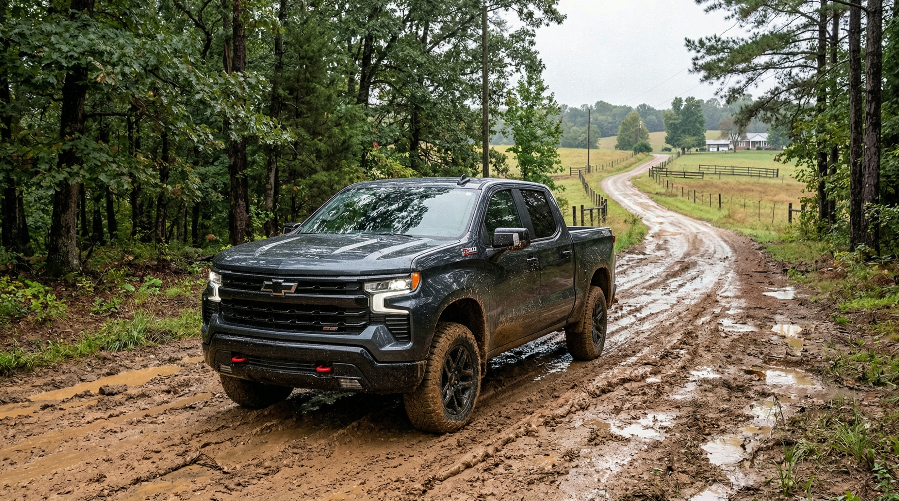

- Shared platform: GM T1 full-size — identical frame, engines, and suspension.
- Max towing (both): 13,300 lbs with 6.2L V8, properly equipped.
- Max payload (both): 2,280 lbs.
- Best Silverado for value/off-road: Trail Boss (Rancho shocks, factory 2" lift).
- Best Sierra for luxury: Denali / Denali Ultimate (open-pore wood, Super Cruise available).
- Exclusive to Sierra: MultiPro 6-function tailgate across the lineup.
- One dealership, both trucks: Wilson County Chevrolet Buick GMC at 903 S Hartmann Dr, Lebanon.
Same platform, different personalities
Both trucks roll off the same GM assembly line with the same ladder frame, independent front suspension, multi-link rear suspension, and identical powertrain options. A Lebanon, TN buyer comparing the two trucks is really shopping between brands, interior character, and feature packages — not fundamentally different vehicles.
The Silverado has traditionally been the volume seller, focused on broad appeal: work trucks at the bottom, luxury at the top, with a wide center that serves contractors, farmers, hunters, and daily drivers across Wilson, Smith, Trousdale, and DeKalb counties. The Sierra leans more upscale. GMC markets itself as "Professional Grade," and the Sierra reflects that with a more chiseled exterior, higher-content standard features, and exclusive options like the MultiPro tailgate and the Denali trim that competes with luxury truck brands.

Both trucks in stock on the same lot in Lebanon, TN. Customers compare a Silverado Elevation and a Sierra Elevation back-to-back.
One dealership, both trucks. Wilson County Chevrolet Buick GMC carries both Silverado and Sierra inventory on S. Hartmann Drive in Lebanon. Buyers from Mount Juliet, Carthage, Gordonsville, Gallatin, and Hendersonville can compare both trucks — and drive both — without visiting a second dealership.
Side-by-side spec comparison: 2026 Silverado 1500 vs. Sierra 1500
| Specification | Silverado 1500 | Sierra 1500 |
|---|---|---|
| Platform | GM T1 full-size | GM T1 full-size |
| Base Engine | 2.7L Turbo 4-cyl, 310 hp | 2.7L Turbo 4-cyl, 310 hp |
| V8 Options | 5.3L / 6.2L EcoTec3 | 5.3L / 6.2L EcoTec3 |
| Max Towing | 13,300 lbs | 13,300 lbs |
| Max Payload | 2,280 lbs | 2,280 lbs |
| Bed Lengths | 5'8", 6'6", 8'2" | 5'8", 6'6", 8'2" |
| Cab Styles | Regular, Double, Crew | Regular, Double, Crew |
| 4WD | Available | Available |
| Off-Road Package | Trail Boss (Rancho shocks) | AT4 (Multimatic DSSV) |
| Luxury Top Trim | High Country | Denali / Denali Ultimate |
| Tailgate | Standard | MultiPro 6-function |
| Entry Work Trim | Work Truck (WT) | Pro — more content, higher price |
| Infotainment | 11" or 13.4" | 11" or 13.4" |
| Starting MSRP | Lower (WT) | Higher at entry |
| Exterior Styling | Traditional, broad appeal | Bolder grille, premium cues |
Specs represent 2026 model year. Towing and payload require properly equipped configurations. Verify with our sales team for specific builds.
Trim-by-trim buyer guide
Work Truck (WT)
- Lowest MSRP — best farm/work value
- Vinyl flooring, steel wheels, 8'2" bed available
- 2,280 lbs max payload
Custom / Custom Trail Boss
- Cloth interior, body-color bumpers
- Custom Trail Boss adds off-road content
LT / LT Trail Boss
- Upgraded infotainment, remote start
- LT Trail Boss: Z71-adjacent for less
Trail Boss
- Factory 2" lift, Rancho monotube shocks
- Goodyear Wrangler tires, skid plates
- Locking rear differential
RST / LTZ / Z71
- RST: sport-appearance package
- LTZ: leather, heated seats, Bose audio
- Z71: off-road suspension + LTZ interior
High Country
- Top Silverado trim
- Leather, chrome accents, 13.4" screen
- Multi-color ambient lighting
Pro
- Sierra entry — more content than WT
- Higher starting MSRP than Silverado WT
- No farm-utility trim equivalent
SLE
- Cloth interior, 8" infotainment
- Comparable to Silverado Custom/LT
- MultiPro tailgate available
Elevation
- Sport-appearance — dark chrome, 20" wheels
- Comparable to Silverado RST
AT4
- Factory 2" lift, Multimatic DSSV shocks
- Skid plates, locking rear differential
- More premium interior than Trail Boss
SLT
- Leather seats, heated/ventilated front
- Power-adjustable pedals
- Comparable to Silverado LTZ
Denali / Denali Ultimate
- Open-pore wood trim, massage seats
- 13.4" Google Built-In screen
- Super Cruise hands-free driving available
Which truck wins by use case?
-
Farm & Ranch (Wilson, Smith, Trousdale)Payload, 8' bed, vinyl interior, lowest cost of ownershipSilverado WT
-
Deer Hunting (WMAs, private tracts)Off-road lift, skid plates, aggressive tires — Tennessee Zone L terrainSilverado Trail Boss
-
Boat Towing (Old Hickory, Center Hill, Percy Priest)Trailering package, integrated trailer brake, max towing — identicalTie — both trucks
-
Daily Commute (Lebanon/Mount Juliet → Nashville)Comfortable interior, fuel efficiency, highway refinementSierra SLT/Denali
-
Off-Road Weekend (Cherokee NF, Caney Fork)Both lift, skid plates, locking diff — AT4 adds premium shocksSierra AT4
-
Horse Trailer (county fairs, Gordonsville shows)Gooseneck or bumper-pull up to 13,300 lbs with 6.2L V8Tie — both trucks
-
Luxury & Business Statement (Nashville meetings)Open-pore wood, massage seats, Super Cruise, 13.4" screenSierra Denali
-
Family Hauler (Gallatin, Hendersonville school runs)Crew cab, safety tech, rear-seat room — comparable at LT/SLE+Tie — similar trims
Off-road head-to-head: Silverado Trail Boss vs. Sierra AT4
| Feature | Silverado Trail Boss | Sierra AT4 |
|---|---|---|
| Factory Lift | 2 inches | 2 inches |
| Shocks | Rancho monotube | Multimatic DSSV (premium) |
| Skid Plates | Standard | Standard |
| Locking Rear Diff | Standard | Standard |
| All-Terrain Tires | Goodyear Wrangler | Goodyear Wrangler |
| Off-Road Modes | Available | Available |
| Interior Content | Practical, mid-grade | Premium leather, more tech |
| Price vs. Base | More affordable | Significant premium |
| Best For | Hunters, value off-roaders | Off-road + luxury buyers |
For Middle Tennessee deer hunters navigating logging roads in Smith County, accessing private tracts near Gordonsville, or traversing muddy WMA access roads during Zone L season, the Trail Boss delivers everything needed without the AT4's price premium. If you want to go off-road on Saturday and pull up to a Nashville client meeting looking sharp on Monday, the AT4's upgraded interior justifies the extra cost.

2026 Silverado 1500 Trail Boss — factory 2-inch lift, Rancho monotube shocks, Goodyear Wrangler all-terrain tires.
Interior & technology: where the Sierra pulls ahead
Silverado interior highlights
- Work Truck / Custom: Durable vinyl flooring, simplified controls — practical for farm and job-site use.
- LT through LTZ: Cloth or leather, heated/ventilated front seats, 11" or 13.4" diagonal infotainment.
- High Country: Leather throughout, chrome interior accents, multi-color ambient lighting, Bose premium audio.
- Standard tailgate on all Silverado trims.
Sierra interior highlights
- Pro / SLE: Higher standard content than equivalent Silverado trims.
- SLT / Elevation: Leather seats, ventilated front seats, wireless charging standard at SLT.
- AT4: Off-road exterior with SLT-level interior comfort.
- Denali: Open-pore genuine wood trim, massage front seats, 13.4" Google Built-In touchscreen, available Super Cruise.
- MultiPro tailgate: Available across Sierra lineup — 6-function gate with inner step, load stop, and cargo mode.
The MultiPro tailgate advantage. The Sierra's 6-function tailgate is one of the most practical exclusive features in the segment. The built-in step makes bed access significantly easier. The inner gate creates a full-length support for 4×8 sheet goods. Wilson County buyers who regularly load lumber, hay, or equipment from elevated docks will notice a real functional difference.
Who should buy the Silverado — and who should buy the Sierra?
Buy the Silverado 1500 if…
- You need a bare-bones farm or work truck (WT trim)
- You want the Trail Boss off-road package at the best price
- You haul in the bed regularly and want the 8'2" box option
- You want Z71 suspension without stepping to a higher trim
- You're budget-conscious and need the lowest MSRP
- You want a truck that's widely serviced and parts-available
- You're a Lebanon, Carthage, or Hartsville farmer or contractor
Buy the Sierra 1500 if…
- You want the Denali luxury interior — the best 1500 interior available
- You want the MultiPro 6-function tailgate
- You want AT4 off-road capability with a premium interior
- You commute to Nashville and want a premium daily-driver experience
- You want available Super Cruise hands-free highway driving
- You're buying for business or professional image
- You prefer Multimatic DSSV shocks over Rancho monotube
Our sales team can help buyers from Mount Juliet, Gordonsville, Gallatin, Hendersonville, and across the Lebanon trade area compare real in-stock inventory on both trucks — MSRP, current incentives, and available GM financial programs — during a single visit to 903 S. Hartmann Drive.
Compare the Silverado and Sierra Side-by-Side in Lebanon, TN
Test drive a Silverado and a Sierra on the same visit — no need to shop two dealerships. Serving Lebanon, Mount Juliet, Carthage, Hartsville, Gallatin, Hendersonville, and all of Middle Tennessee.
Frequently asked questions
Answers to the most common Silverado vs. Sierra questions from Wilson County and Middle Tennessee truck shoppers.
What is the difference between the Chevrolet Silverado 1500 and the GMC Sierra 1500?
The Silverado 1500 and Sierra 1500 share the same GM T1 platform, engines, and core capability — including up to 13,300 lbs towing and 2,280 lbs payload. The key differences are styling, interior refinement, and trim lineup. The Sierra leans more premium: its MultiPro tailgate, leather-heavy interiors, and AT4/Denali trims appeal to buyers who want a truck that doubles as a luxury vehicle. The Silverado offers broader trim variety, a more traditional truck personality, and the Trail Boss off-road package favored by hunters and outdoor enthusiasts in Wilson County.
Does Wilson County Chevrolet Buick GMC sell both the Silverado and the Sierra?
Yes. Wilson County Chevrolet Buick GMC in Lebanon, Tennessee carries both the Chevrolet Silverado 1500 and the GMC Sierra 1500 in stock. Because both brands are sold at the same dealership on S. Hartmann Drive, you can compare both trucks side-by-side during a single visit and choose the exact configuration — engine, cab, bed, trim — that fits your needs.
Which has better towing — the Silverado 1500 or the Sierra 1500?
Towing capacity is effectively identical. Both use the same engines — including the 6.2L V8 (up to 13,300 lbs) and the 5.3L EcoTec3 V8 (up to 11,200 lbs) — and the same GM T1 platform. If you're towing a boat on Old Hickory Lake, a cattle trailer in Wilson County, or a horse trailer to a show, capability is a wash. The decision comes down to trim level, features, and price.
Is the GMC Sierra 1500 more expensive than the Silverado 1500?
Generally, yes. The Sierra is positioned as a more premium brand, and comparable trims often carry a modest premium over their Silverado counterparts. The gap varies by trim and equipment package. Sierra AT4 and Denali command significant premiums, while the base Sierra and Silverado are closely priced. Our sales team can run a side-by-side quote on any two configurations you're comparing.
Which truck is better for deer hunting in Middle Tennessee — Silverado or Sierra?
The Silverado 1500 Trail Boss is the stronger choice for deer hunters in Wilson, Smith, Trousdale, and DeKalb counties. Factory 2-inch lift, Rancho shocks, skid plates, and aggressive all-terrain tires — purpose-built for back-field food plots and muddy WMA access roads during Tennessee Zone L season. The Sierra AT4 is capable but costs significantly more. Both offer four-wheel drive; the Trail Boss's factory lift gives it an edge for the steep, wooded terrain common to Middle Tennessee hunting ground.
Which is better for a work or farm truck — Silverado or Sierra?
For a pure working farm truck in Wilson County, the Silverado 1500 Work Truck (WT) is the practical choice. It starts lower, offers an 8'2" bed option, and has a vinyl-floored cab that holds up to a working environment. The Sierra doesn't offer a bare-bones work trim equivalent — its entry point already includes more interior content. Wilson County farmers running cattle in Smith County or hay in Trousdale County typically don't need the Sierra's premium interior; the Silverado WT maximizes payload and minimizes total cost of ownership.
Which truck has a better interior — the Silverado 1500 or Sierra 1500?
The Sierra 1500 has the edge in interior quality, particularly in the AT4 and Denali trims. The Denali uses open-pore wood trim, premium leather, and a 13.4-inch infotainment screen. The Silverado High Country is well-appointed, but the Sierra Denali is widely regarded as the more refined interior between the two. If you want the most upscale daily driver on the Lebanon → Nashville commute, the Sierra Denali delivers.
Can I test drive both trucks at the same dealership near Lebanon, TN?
Yes. Wilson County Chevrolet Buick GMC at 903 S. Hartmann Drive in Lebanon, Tennessee sells both Chevrolet and GMC — meaning you can test drive the Silverado 1500 and Sierra 1500 back-to-back without visiting two different dealerships. This is a significant advantage for buyers in Lebanon, Mount Juliet, Carthage, Hartsville, and Gordonsville who want to compare both trucks before deciding.
Related guides
Specifications, pricing, and towing/payload ratings represent 2026 model year vehicles and are subject to change. Maximum towing and payload require properly equipped configurations with the appropriate packages and hitch. Contact Wilson County Chevrolet Buick GMC at (615) 444-9642 or visit 903 S. Hartmann Dr., Lebanon, TN 37090 to confirm current pricing and available inventory. Wilson County Chevrolet Buick GMC is an authorized Chevrolet, Buick, GMC, and Hyundai dealer.